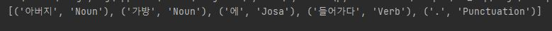
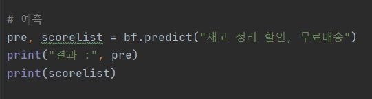
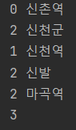
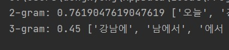
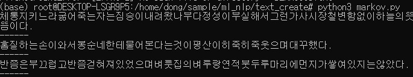
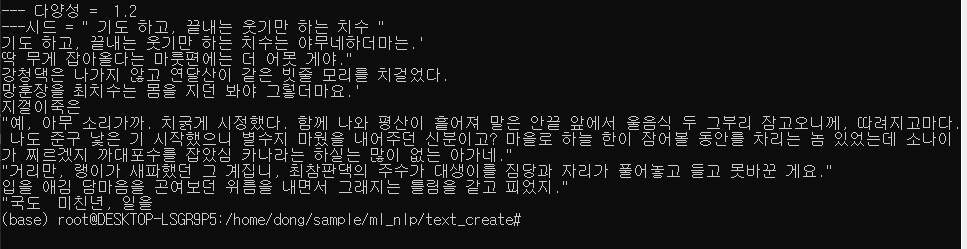

파이썬 자연어 처리
1. 사용 라이브러리
소설 토지 분석 : konlpy, bs4, gensim(word2vec)
단어 유사도 : konlpy, gensim(word2vec)
베이즈 정리 : konlpy
N-gram 문장 유사도 : -
문장 생성하기 : keras, numpy, konlpy, bs4
2. 개발 환경
os : windows 10 Pro
virtual-env : Ubunto, anaconda3
language : python 3.6
IDE : pycharm
package : konlpy, bs4, gensim, keras, scikit-learn
3. 박경리 저자:토지 분석
문장 형태소 분석

단어 출현 빈도 분석
동사의 사용 빈도 확인 할 수 있다
붉은 상자 안의 내용을 수정하면 품사별로 빈도를 확인 할 수 있습니다.
word2vec 모델을 생성
토지 글을 사용해서 word2vec모델을 만들어 보았습니다.
bs4를 통해 body 안의 text의 내용만 처리하였고,
처리 결과를 toji.model로 저장하였습니다.
모델을 이용하여 근접한 단어를 찾아 보자
데이터가 적어 약간 이상하지만 거의 근접한 단어를 찾았다고 볼수 있습니다.
4. 단어 유사도
위키 피디아에서 데이터를 받아 단어 유사도를 확인하겠습니다.
위키피디아의 덤프 홈페이지에서 데이터를 받습니다.
konlpy의 Okt로 형태소 분석을 한 후 Word2Vec로 모델을 만듭니다.
만들어진 모델을 이용해 여러 단어를 입력해 유사한 언어를 확인해봅니다.
파이썬을 입력하면 다른 언어들이 나옵니다.
엄마, 아빠를 입력하면 아줌마, 아저씨 등이 나옵니다.
유사에 왕자, 여성을 제거에 남성을 입력하면 왕녀, 여왕 등이 나옵니다.
유사도 뿐만 아니라 특정 단어와 비슷한 단어를 제외한 유사 단어도 확인이 가능합니다.
5. 베이즈 정리
베이즈 정리는 조건부 확률과 관련된 이론입니다.
조건부 확률은 A라는 사건이 일어 났을 경우에 B사건이 일어날 확률입니다.
즉, 주사위를 굴렸을때 처음에 6이 나오고 두번째에 3이 나올 확률과 같습니다.
6이 나올 확률은 1/6이고 다시 두번째 주사위를 굴렸을때 3이 나올 확률도 1/6입니다.
이 두 1/6이 함께 나와야 하기 때문에 (1/6) * (1/6) 이 조건부 확률로 나오게 됩니다.
간단하게 나이브 베이즈를 통한 분류를 하겠습니다.
깃허브의 bayes/bayes.py 의 코드로 나이브 베이즈 구조를 생성합니다.
위 그림처럼 간단하게 학습을 시키고 테스트 하겠습니다.

위 확률처럼 '광고'일 확률이 더 높게 나옵니다.
6. N-gram 문장 유사도
두 개의 문자열을 비교하여 다름의 정도를 나타내는것이 레벤슈타인 거리 입니다.
각 문자열의 같은 위치에 있는 문자열을 비교하여 카운트를 합니다.
'가나다라' 와 '가마바라'의 레벤슈타인 거리는 2 입니다.
두번째 나:마 와 세번째 다:바 가 다르기 때문입니다.

신촌역을 여러 문장과 비교한 레벤슈타인 거리는 위 이미지처럼 나옵니다.
마지막 3은 null값과 비교하여 3단어 모두 바꿔야 하기 때문입니다.
n-gram은 레벤슈타인 거리와 비슷하지만 글자를 n개의 문자로 만들어 비교합니다.
n-gram을 이용하면 도용이나 복사를 확인 할 수 있습니다.
A : 오늘 강남에서 맛있는 스파게티를 먹었다.
B : 강남에서 먹었던 오늘의 스파케티는 맛있었다.
위의 두 문장을 비교하면

위 이미지처럼 중복 되는 단어들이 나옵니다.
2글짜씩 나누었을때가 정확도가 더 높게 나옵니다.
단어들의 유사도를 비교하기 때문에 '먹었던'과 '먹었다'는 다르다고 인식하기 때문입니다.
7. 마르코프, LSTM/RNN문장 생서
마르코프 체인은 현재 단어에서 다음단어를 확률적으로 선택하는 로직입니다.
문장의 의미를 파악하는 것이 아닌 많이 사용되는 단어를 선택하기 때문에 문장의 의미가 이상 할 수 있습니다.

위 문장은 띄어쓰기가 생락된 문장 생성입니다.(네이버 맞춤법 검사 주소 변경으로 적용불가)
마르코프 체인이 문장을 이상하게 만들기도 하지만 위에서 사용한 토지를 데이터로 사용하여 문장이 더욱 이상하게 느껴집니다.
LSTM/RNN은 재귀 신경망과 Long Short Term-Memory입니다.
시간 순서를 기반으로 데이터를 다룰 수 있게 되면 문장을 쉽게 생성할 수 있습니다.
위와 마찬가지로 토지 데이터를 이용하여 학습을 하겠습니다.

마르코프보다 자연스럽지만 토지를 데이터로 사용하여 여전히 부자연스럽다.
SNS나 뉴스 기사 등의 데이터를 사용하여 문장을 생성하면 더욱 자연스럽게 생성한다.